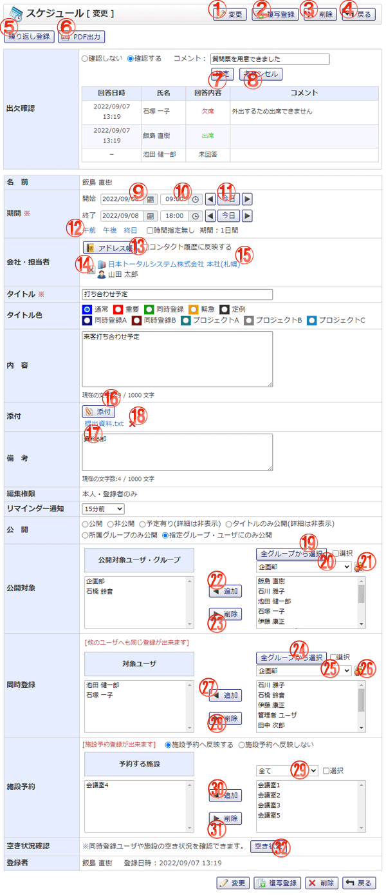

スケジュールを編集する画面です。（出欠確認を依頼している場合）

機能説明
変更ボタン入力された内容でスケジュールを登録し、完了画面へ遷移します。入力内容に不備がある場合エラーメッセージが表示されます。 |
複写登録ボタンスケジュール登録画面へ遷移します。その際、現在入力している内容が各入力項目に設定されます。 |
|---|---|
削除ボタンスケジュールデータ削除確認画面へ遷移します。 |
戻るボタン遷移元の画面へ遷移します。 |
繰り返し登録ボタンスケジュール繰り返し登録画面へ遷移します。スケジュールの拡張登録が行えます。 |
PDF出力ボタン表示画面のPDF出力を行います。 |
確定ボタン入力されたコメントを登録します。 |
キャンセルボタン入力テキストボックス，確定ボタン，キャンセルボタンを非表示にし、編集ボタンを表示します。 |
日付テキスト・カレンダーアイコンカレンダーが表示されます。カレンダーで日付をクリックすると、クリックした日付がセットされます。 |
時間テキスト・時計アイコン時間入力画面が表示されます。時間入力画面で時間を変更すると、変更した時間がセットされます。 |
前日・今日・翌日ボタン年・月・日コンボを切り替えます。 |
時間マスタリンク設定した時間を入力します。 |
アドレス帳ボタンポップアップで会社選択画面を開きます。 |
会社・担当者削除ボタン会社・担当者をスケジュールから除外します。 |
会社名ポップアップで会社情報画面を開きます。 |
添付ボタン添付ファイル選択画面をポップアップで表示します。ファイルを選択し、確定すると添付欄に選択したファイル名が追加されます |
添付ファイル添付ファイル名をクリックすると、添付ファイルをダウンロードすることができます。 |
添付削除ボタン添付ファイルをスケジュールから除外します。 |
公開対象全グループから選択ボタンポップアップで全グループから選択画面が開きます。 |
公開対象グループコンボ選択したグループに所属するユーザが表示されます。 |
公開対象グループボタンポップアップでグループ選択画面が開きます。 |
公開対象追加ボタン選択されているユーザ・グループを、公開対象に追加します。 |
公開対象削除ボタン選択されているユーザ・グループを、公開対象から除外します。 |
全グループから選択ボタンポップアップで全グループから選択画面が開きます。 |
グループコンボ選択したグループに所属するユーザがユーザリストに表示されます（既に宛先に追加されているユーザは表示されません）。 |
グループボタンポップアップでグループ選択画面が開きます。 |
ユーザ追加ボタンユーザリストで選択されているユーザを、宛先リストに追加します。 |
ユーザ削除ボタン宛先リストで選択されているユーザを、宛先リストから除外します。 |
施設グループコンボ選択したグループに所属する施設が施設リストに表示されます（既に予約する施設に追加されている施設は表示されません）。 |
施設追加ボタン施設リストで選択されている施設を、予約する施設リストに追加します。 |
施設削除ボタン予約する施設リストで選択されている施設を、予約する施設リストから除外します。 |
空き状況ボタンポップアップで施設予約日間画面が表示され、同時登録ユーザや施設の予約状況を確認することができます。 |
表示・入力項目説明
出欠確認
同時登録ユーザに出欠確認するかを選択します。また、同時登録されているユーザの出欠確認への回答が表示されます。
名前
当スケジュールを登録する対象者の名前が表示されます。
期間
当スケジュールの開始～終了日時を指定します。
時間指定無し
チェックするとスケジュールの開始時間、終了時間を未指定にします。
スケジュール期間
当スケジュールの開始日時から終了日時までの日数を表示します。
コンタクト履歴に反映する
チェックした状態でスケジュールを登録するとアドレス帳のコンタクト履歴を同時に登録します。
会社
スケジュールに関連する会社を選択します。
アドレス
スケジュールに関連するアドレスを選択します。
タイトル
当スケジュールのタイトルを入力します（50文字以内）。
タイトル色
当スケジュールのタイトルの色を選択します。
内容
当スケジュールの内容を入力します（1,000文字以内）。
添付
当スケジュールに添付するファイルを選択します。
備考
当スケジュールの備考を入力します（1,000文字以内）。
編集権限
このスケジュールの編集権限を選択します。
リマインダー通知
当スケジュールのリマインダー通知時間を選択します。
公開
当スケジュールの公開方法を指定します。
公開：共有範囲内の全社員が閲覧することができます。
非公開：登録者のみが閲覧可能です。
予定有り：タイトルに"予定あり"と表示され、詳細は非表示になります。
タイトルのみ公開：タイトルのみ表示され、詳細は非表示になります。
所属グループのみ公開：スケジュール登録ユーザと同じグループに所属しているユーザのみスケジュールを表示可能になります。
指定グループ・ユーザにのみ公開：指定したグループ・ユーザのみスケジュールを表示可能になります。
登録者は閲覧可能です。共有範囲内の全社員には「予定あり」のみ表示されます。
公開対象
当スケジュールを公開するユーザ・グループを選択します。公開に「指定したユーザ・グループにのみ公開」が選択されている場合のみ表示されます。
同時修正
同時修正する：当スケジュールを他のユーザにも同時に修正・反映する場合に選択します。
同時修正しない：当スケジュールを自分のみ修正・反映する場合に選択します。
同時登録
当スケジュールを他のユーザにも同時に登録する場合に宛先を選択します。
施設予約
当スケジュールと同時に施設予約を行う場合に施設を選択します。
空き状況確認
同時登録ユーザや施設の空き状況を確認できます。
登録者
当スケジュールの登録者の名前が表示されます。